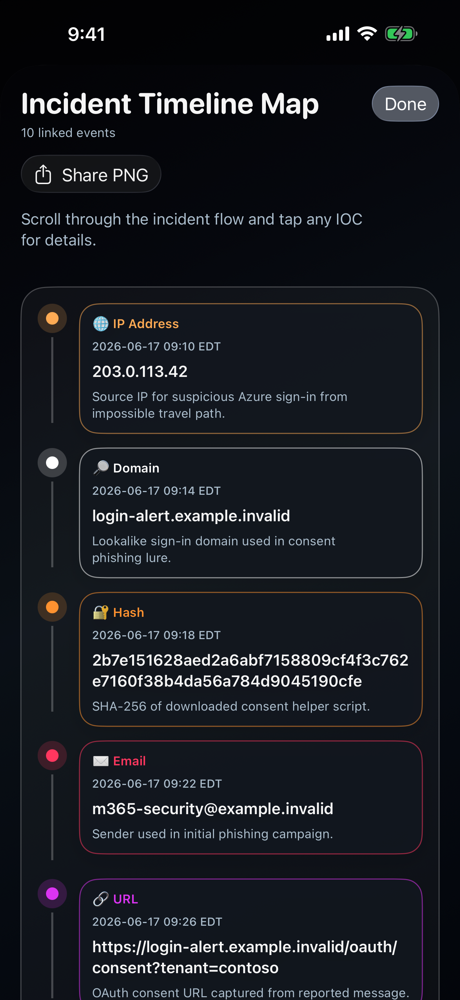
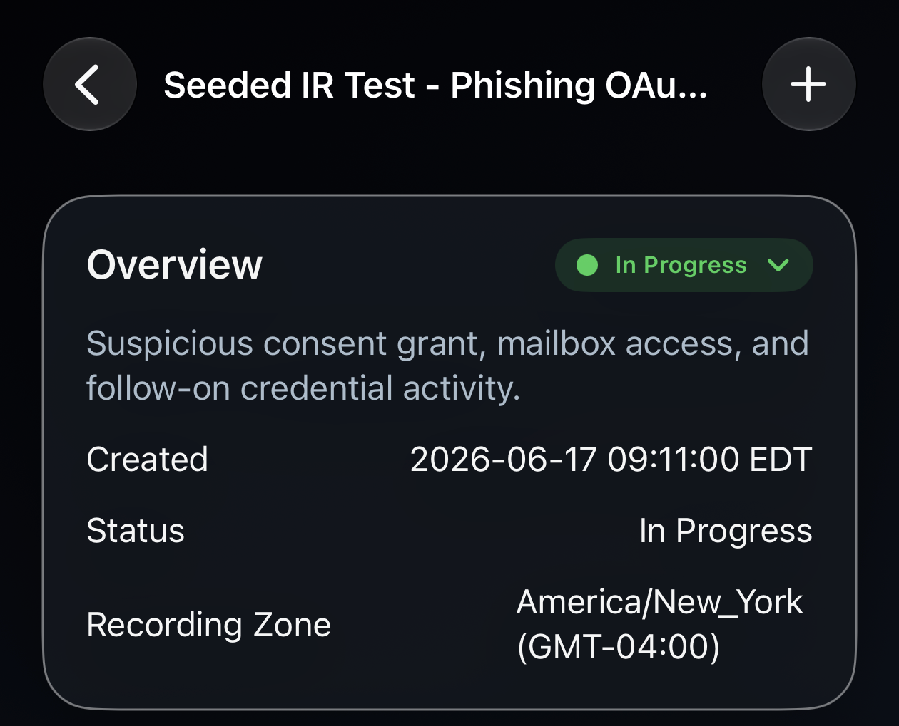
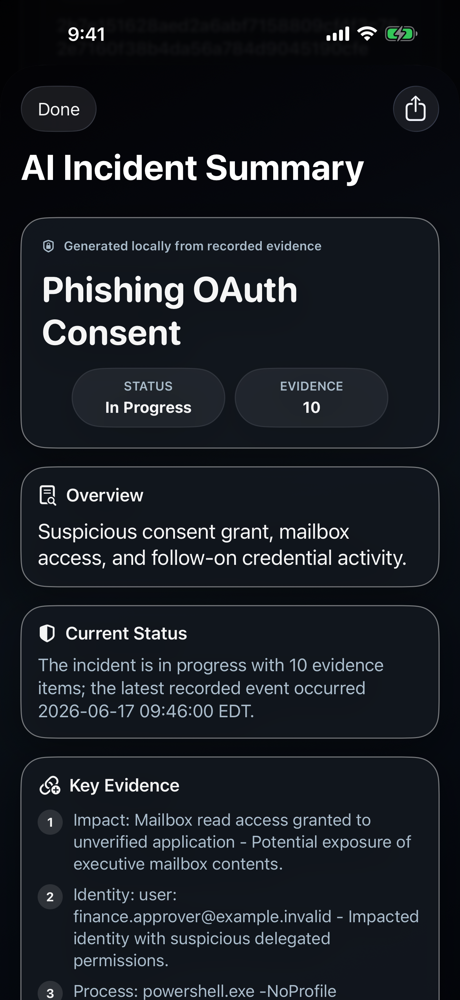
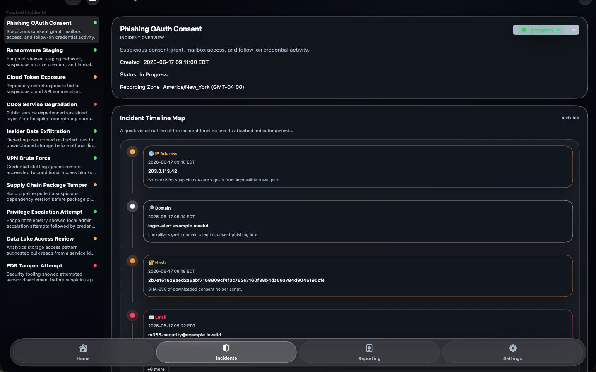

One place for the case
Record the incident overview, status, and investigation notes as the picture changes.
Incident response, kept close
A focused workspace for documenting cyber incidents, connecting evidence to events, and preparing a clear analyst handoff.

Pre-release screen with fictional case dataRecord the incident overview, status, and investigation notes as the picture changes.
Keep indicators linked to their incident, with discovered and event times for a usable timeline.
Export an incident package, then review and import a colleague's work as a new or merged case.
The workflow
Capture what is known, what remains uncertain, and its current status.
Add IPs, domains, URLs, hashes, identities, impact observations, and notes as evidence develops.
Prepare an on-device summary or export a ZIP handoff, timeline CSV, and other reports.
Inside the app
Real pre-release screens; all case details shown are fictional.



Local by default
IR Tracker stores cases in the app's local workspace. It does not require an account or a developer-hosted incident database. You choose when to export or share a case. Review summaries and exported files before sending them to another destination.
Read the privacy policyIR Tracker for iPhone, iPad, and Mac is being prepared for release.
Contact support